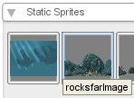
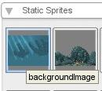
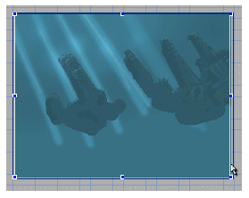
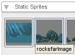
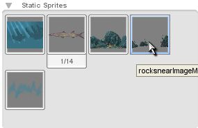
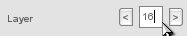
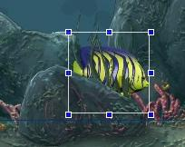

Figure 3.3.1

Figure 3.3.2
Torque 2D - Fish Game Tutorial - Part 3
3. Creating the Level
Now that we have our fish moving on key press, we can give it a level to move around in. We have three background images that we can place. First we will place the one first on the Static Sprites list (as shown in Figure 3.1.1), so click and drag it into your level.
|
 |
|
As you can see, after dropping the image into your level it is far too big. This is because the image's source size was created very big to scale properly with higher resolutions. So lets scale it down. The easiest way to do this is to zoom out (with your mouse wheel or the zoom out button) and then grab a corner, hold shift as you drag to keep its ratio, our goal is to make it just slightly bigger than our camera (which is represented by the outer blue border line behind our image), to do this you must first size it just inside the camera (as shown in Figure 3.1.2), then scale it out just beyond the camera's borders.

Figure 3.1.2
Now one more thing we need to do before we can add the next two background images, we need to set this background's layer. Change the background's layer to 30 (as shown in Figure 3.2.1).
Now the Fish should be visible again (as shown in Figure 3.2.4).
|
|
Now that we know the process for adding, positioning and layering our full screen background images, lets repeat the process for our two rock images. These will need to be added in a layer above the background image, but behind the fish image. We also will want to put a bit of a gap between the two rock layer images so our fish can be made to swim in between them. Click the "Create" tab to see our images again.
Now drag the first rock image, the third image in our Static Sprites library (as shown in Figure 3.3.1), into the center of your level. Just like our background image, click one of the corners and hold the shift key to drag it proportionally, do this on each corner until it fits our background image nicely. It is better to make it just a slight bit larger than our background image than smaller (as shown in Figure 3.3.2). As you can see our image is in front of the fish image, so we must change it's layer. Click the "Edit" tab and then change it's layer to 20. Now the rocks should be behind the fish (as shown in Figure 3.3.3).
|
 |
|
Now we have our first rock image in, lets add our second one. As you can see on the rock image we just added, there are some areas that seem to be detailed very roughly in comparison to the rest. These are the spots that our next layer will fit over, so when sizing and positioning our next rock layer we must make sure we fit it nicely over those areas. Click on the "Create" tab again and this time we are getting the fourth image in our Static Sprites library (as shown in Figure 3.3.4). Drag that image into the center of our level and resize it to fit our other rock image (just like we did before, you can hold shift to keep the resizing proportional when using the corner handles on the object).
|
|
|
 |
|
|
|
We have now placed our background image, layered it to be shown behind everything, our back rock image to be shown behind everything but our background, as well as our front rock image to be shown a few layers in front of our back rock image. Our base level is complete, it no longer looks like our fish is swimming in space.
Our final step before testing our fish
swimming in our newly created level, is to change our fish's layer. We have our
back rock layer set to 20 and our front rock layer set to 12, so our fish must
be somewhere in between these layers. I created such a gap so we have a lot of
options to place things in our level in front of or behind our fish, but still
in-between the rocks. So select your fish, you may need to click on the fish's
area a few times to cycle through selections, and then change the fish's layer
to 16 (as shown in Figure 3.4.1).
|
 |
Now lets test it! Save the level and press Play. You should be presented with your fish in the level and can move it (as we did before) with our a, s, w, and d keys. Try moving behind the lower rocks, as you can see our fish is layered in between them! (as shown in Figure 3.4.2)

Figure 3.4.2
As you may notice, when we move left or right, the fish still faces the same way, this will be addressed in Part 4!